Visual

Learning Styles
Reading and writing give us tools that let us share and communicate ideas, stories, knowledge and learn other languages. Despite how reading and writing go hand in hand, there is not one way or one combination that universally teaches everyone how to read.
👥 social learning = you like to study and learn around a group of people. also called interpersonal learning.
👤 solitary learning = you like to learn one-on-one or by yourself through self-study. also called intrapersonal learning.